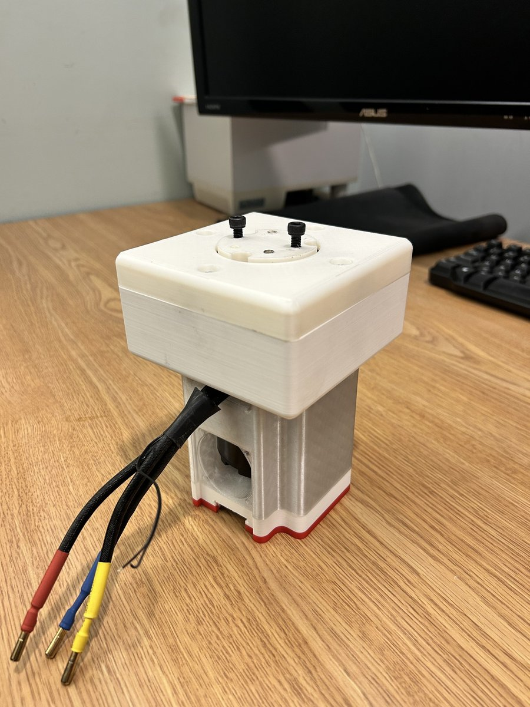
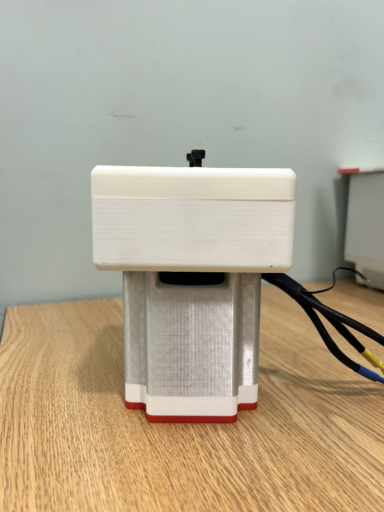
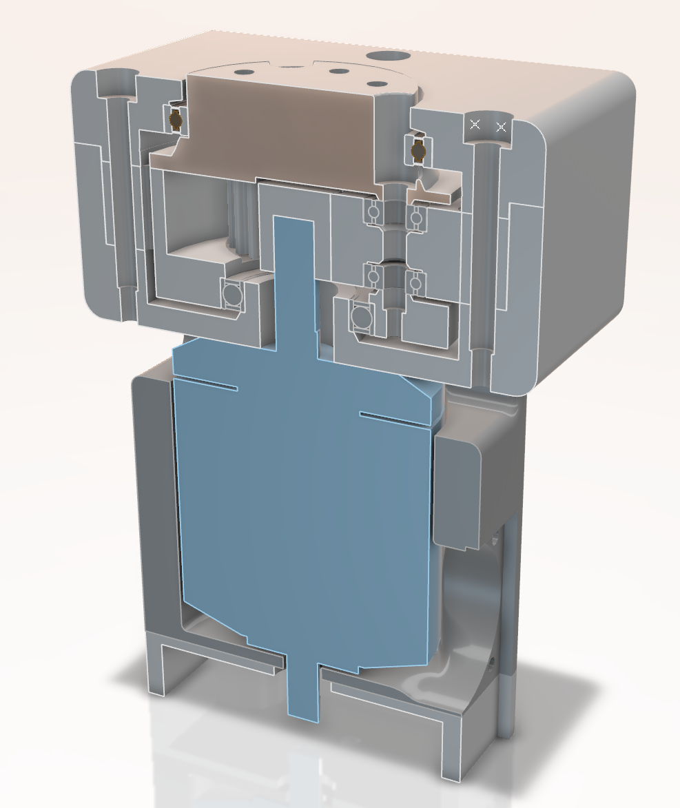
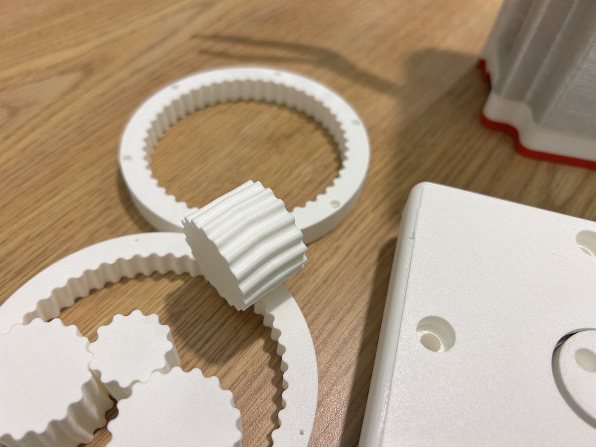

Overview
{kind=link}

This started as a hackathon day in January 2026 with Russell Bilinski. We'd been looking at Caden Kraft's actuator work and wanted to learn more about how QDD gearboxes actually work by building one. Russell had a D6374 motor, an ODrive controller, bearings, and an encoder, so we started from there.
A QDD uses a low-ratio gearbox to increase the torque density of a motor without needing an oversized one. The tradeoff with gearing is reflected inertia, which scales with the square of the ratio, so a higher ratio makes the actuator less sensitive to external forces. Keeping the ratio low means you can still do impedance control, because the motor can feel what's happening at the output. That requires minimal backlash and friction in the gearbox, which is what most of the design effort went into. I designed a 5:1 planetary from scratch and 3D-printed it on a Bambu P1S.
Requirements
| Requirement | Target | Type |
|---|---|---|
| Backlash | ≤ 0.5° | Hard |
| Cost | < $120 CAD | Hard |
| Backdrivability (friction torque) | < 1 Nm | Hard |
| Peak torque | ≥ 16 Nm | Hard |
| Continuous torque | ≥ 12 Nm | Hard |
| Efficiency | > 90% | Soft |
| Weight | < 2 kg | Soft |
Project Status
Trade Studies
I scored every major design choice with a weighted matrix before I started CAD. Gear type, ratio, and bearing type were all decided this way.
Gear Type
I compared 6 gear concepts across 7 criteria. Planetary came out on top because it's cheap, printable, and backdrivable, which are the three things that matter most for this project.
| Metric (Weight) | Planetary | Cycloidal | Belt | Capstan | Strain Wave | Sequential |
|---|---|---|---|---|---|---|
| Cheapness (0.20) | 5 | 3 | 3.5 | 4 | 3.5 | 4.5 |
| Transparency (0.15) | 4 | 3.5 | 5 | 4 | 3 | 4 |
| Torque Density (0.10) | 4 | 4 | 3 | 3 | 5 | 2 |
| Precision (0.15) | 4 | 5 | 3.5 | 3 | 5 | 4 |
| DFM/DFA (0.15) | 4 | 3 | 4 | 3 | 3 | 4 |
| Efficiency (0.10) | 4.5 | 4 | 5 | 4.5 | 3.5 | 4 |
| Durability (0.15) | 5 | 4 | 4 | 4 | 3 | 5 |
| Weighted Total | 4.40 | 3.73 | 3.98 | 3.65 | 3.65 | 4.05 |
Ratio
5:1 scored highest at 4.83/5. Lower ratios are more backdrivable but give up torque multiplication; higher ratios add friction and reduce transparency. 5:1 was the sweet spot.
Bearings
Ball bearings won at 4.05/5. I weighted cost at 60% because crossed rollers scored better on performance but cost 5x more, which would have blown the $120 budget.
CATIA V6
I had no CATIA experience before this project. About 60-80 hours of self-directed learning went into the assembly, and most of that was figuring out what not to do.
The assembly is skeleton-driven: a single master part holds all the parameters, reference planes, and axes. Every other part reads from the skeleton, so changing one dimension updates everything downstream automatically. This matters for iteration speed, because when a test result says "make the output shaft 2mm bigger," I change one number and the carrier, lid, and bearings all update.


FDM Tolerancing
FDM prints aren't accurate enough for bearing fits out of the box. Bores print undersized by 0.1-0.4mm depending on diameter, so every bearing interface needs a calibrated offset in the CAD model. I keep each offset as a named parameter in the CATIA skeleton, which means the nominal bearing dimensions stay clean and I can tune each fit independently.
All bearing interfaces target a finger-press transition fit: firm pressure seats the bearing, it clicks in, and it doesn't fall out. I went with this instead of the textbook answer (press fit on the rotating ring) because FDM surface texture provides enough grip on its own, and backdrivability is the priority.
| Interface | Offset | Status |
|---|---|---|
| Housing bearing shaft | +0.10 mm | Validated |
| Carrier bearing bore | +0.10 mm | Validated |
| Lid bearing bore | +0.10 mm | Validated |
| Carrier output shaft | +0.10 mm | Applied |
| Planet bearing bore | +0.15 mm | Validated |
| Ring-to-housing bore | +0.30 mm | Validated |
Calibration Coupon
Before printing the full build, I printed a test coupon with representative features (bearing bores, shaft posts, clearance holes) and measured each one with calipers. The results went straight back into the CATIA offsets.
| Feature | Nominal | Measured | Deviation | Result |
|---|---|---|---|---|
| Main bearing bore | 37.10 mm | 37.10 mm | 0.00 | Perfect fit |
| Bearing shaft post | 25.10 mm | 25.01 mm | -0.09 | Good |
| Planet bore | 14.00 mm | 13.75 mm | -0.25 | Offset increased |
| M3 clearance holes | 3.40 mm | ~3.00 mm | -0.40 | Offset extrapolated |
Smaller holes had worse deviation, which makes sense given FDM accuracy scales with feature size. The planet bore and clearance holes needed the largest corrections. I also ended up switching from heat-set inserts to self-tapping screws (M3: 2.6mm pilot, M4: 3.6mm, M5: 4.6mm), which turned out to be simpler and plenty strong enough for a prototype.
Prototyping
Every change in this revision came from a test on Rev 00A: herringbone gears replaced with spur, carrier shoulders redesigned, lid bearing made floating, heat-set inserts swapped for self-tapping screws. All fits validated.
{kind=link}

{kind=link}

What Changed from 00A
| Change | Source | Part |
|---|---|---|
| Herringbone → spur gears | T-001 | All gears |
| Larger output shaft + bigger top bearing | T-001 | Carrier top |
| Shorter top carrier walls, taller bottom walls | T-003, T-005 | Carrier top/bottom |
| Floating lid bearing arrangement | T-002 | Lid |
| Self-tapping threads (no heat inserts) | T-001 | Carrier |
Fit Results
| Interface | Result | Status |
|---|---|---|
| All bearing bores | Good transition fits | Validated |
| Ring-to-housing | Consistent press fit | Validated |
| Planet bearings | All 3 consistent (fixed from 00A) | Validated |
| Lid drag | No parasitic drag when tightened | Resolved |
| Gear mesh | Smooth — spur gears eliminated notchiness | Resolved |
All interfaces that failed in Rev 00A are now validated, and I've started testing against the requirements.
Backdrivability Demo
Powered Operation
More videos: backlash measurement, assembly
Backlash Measurement
Assembly
{kind=link}
{kind=link}
Testing
Rev 00A Findings
For each of the five issues from Rev 00A, I wrote down the question I was trying to answer and what would count as a pass before running the test.
| Test | Question | Finding | Decision |
|---|---|---|---|
| T-001 | Why does the gearbox feel notchy? | Herringbone misalignment on at least one planet | Switch to spur gears |
| T-002 | Is the lid over-constraining the carrier? | Yes, double-constrained via ring gear + bearing recess | Floating lid bearing |
| T-003 | Does the printed shoulder deform? | Top carrier bearing shoulders printed poorly (overhang) | Carrier wall redesign |
| T-004 | Can carrier halves clock under load? | Some flex when twisting by hand, not a concern operationally | No change needed |
| T-005 | Does tightening bolts bind planets? | Narrow window; 1.1 Nm causes drag | Shoulder redesign |
The biggest finding was T-001. The herringbone tooth profile was causing notchy mesh because even a small alignment error between the two halves of each planet creates interference. At this scale and with FDM tolerances, the helix angle wasn't doing anything useful, so I switched to straight spur gears for Rev 00B. That simplified the assembly, eliminated the risk of misaligned ring gear halves, and made printing easier, all without meaningful loss at this prototype stage.

{kind=link}

Rev 00B Quantitative Results
With Rev 00B assembled and all fits validated, I started testing against the requirements.

| Test | Requirement | Result | Status |
|---|---|---|---|
| T-012 Backlash | ≤ 0.5° | 0° | PASS |
| T-013 Backdrivability | < 1 Nm | — | In progress |
| T-020 Peak Torque | ≥ 16 Nm | — | Pending |
| T-021 Continuous Torque | ≥ 12 Nm | — | Pending |
| T-022 Efficiency | > 90% | — | Pending |
| T-023 Speed Endurance | ≥ 600 RPM | — | Pending |
| T-024 Health Comparison | No major damage | — | Pending |
What's Next
Rev 00B is assembled and the first quantitative result is in: 0° backlash, passing R-01. Backdrive torque is next, using a lever arm and kitchen scale to measure friction against the 1 Nm requirement. After that, the remaining validation tests need a secure actuator mount and a dyno setup. Peak torque, continuous torque, efficiency, and speed endurance all require loaded operation that the current fixturing can't support, so the gearbox housing likely needs a mounting redesign before those can run. A health comparison before and after the stress tests will check for wear or damage.
Design Direction
Once the current prototype meets all design requirements, future revisions will focus on reducing the form factor: integrating the ring gear into the housing wall (cylindrical instead of box-shaped), replacing the lower main bearing with a thinner, larger-diameter one to match the top bearing and cut overall height, and designing a motor housing that integrates with the gearbox for cleaner mounting.